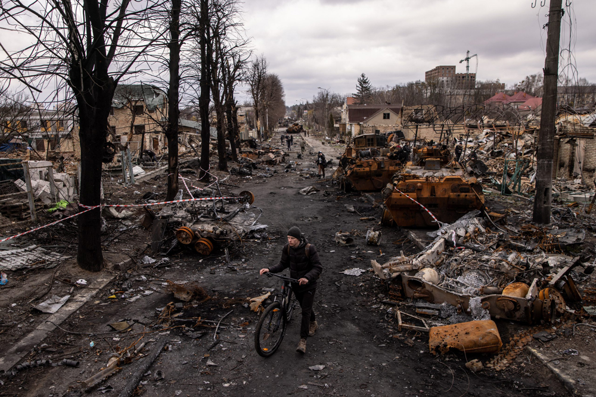

Ucrania VS Rusia

Desde su comienzo el 24 de febrero de 2022, esta guerra está empezando a mostrar señales de detenerse.
El presidente de Estados Unidos, Donald Trump, recientemente informó al mundo de un plan de 28 puntos para firmar un tratado de paz entre Rusia y Ucrania. Este plan y sus 28 puntos han sido una polémica en las redes debido a que algunos de estos puntos han sido rechazados por Ucrania o países de Europa.
Los puntos de este plan serían los siguientes:
- 1: Se confirmará la soberanía de Ucrania.
- 2: Se hará un acuerdo de no agresión entre Ucrania, Rusia y Europa.
- 3: Se le obligará a Rusia a no invadir a países vecinos y se le obligará a la OTAN que no se expanda más.
- 4: Se establecerá un diálogo entre Rusia y la OTAN, con mediación de Estados Unidos, para resolver los temas de seguridad, crear condiciones de desescalada y promover seguridad global, cooperación y desarrollo económico futuro.
- 5: Ucrania recibirá garantías de seguridad confiables.
- 6: El tamaño de las fuerzas armadas ucranianas se limitará a 600.000 efectivos.
- 7: Ucrania aceptará consagrarlo en su Constitución: no se unirá a la OTAN — y la OTAN aceptará reflejar en sus estatutos que Ucrania no será admitida en el futuro.
- 8: La OTAN se compromete a no desplegar tropas en territorio ucraniano.
- 9: Aviones de combate europeos serán desplegados en Polonia.
- 10: Estados Unidos ofrecerá una garantía: si Rusia invade Ucrania, se activará una respuesta militar coordinada y las sanciones internacionales se reinstaurarán; si Ucrania ataca Rusia, perderá las garantías.
- 11: Habrá un paquete global de medidas para la reconstrucción económica de Ucrania, usando activos rusos congelados, inversión internacional y proyectos de desarrollo.
- 12: Rusia será reintegrada a la economía global; podrán reabrirse sanciones bajo ciertas condiciones, y se planea cooperación a largo plazo en áreas como energía, recursos naturales, infraestructura, tecnología, etc.
- 13: Se creará un fondo de desarrollo para Ucrania para reconstrucción, infraestructura, industria, modernización, etc.
- 14: Se formará un grupo de trabajo conjunto (EE.UU.–Rusia) de seguridad para asegurar el cumplimiento del acuerdo.
- 15: Rusia incorporará en su legislación una política de no agresión hacia Europa y Ucrania.
- 16: EE. UU. y Rusia acordarán extender la vigencia de tratados de control de armas nucleares, por ejemplo el START I Treaty.
- 17: Ucrania aceptará ser un Estado no nuclear, de acuerdo con el tratado de no proliferación nuclear.
- 18: La central nuclear de Zaporiyia se reactivará bajo supervisión del International Atomic Energy Agency (IAEA), y la electricidad producida se dividirá equitativamente entre Rusia y Ucrania.
- 19: Ambos países implementarán programas educativos en escuelas y en la sociedad para promover entendimiento, tolerancia cultural, derechos de lenguas minoritarias, libertad de medios, rechazo del extremismo, etc.
- 20: Se reconocerá de facto como territorio ruso a Crimea, Luhansk y Donetsk.
- 21: Las regiones de Kherson y Zaporizhzhia quedarían “congeladas” a lo largo de la línea de contacto actual — es decir, se mantendría el control territorial de facto según el estado en ese momento.
- 22: Tras acordarse las disposiciones territoriales definitivas, ambas partes se comprometen a no cambiarlas por la fuerza. Si alguna parte viola ese compromiso, quedarán sin efecto las garantías de seguridad.
- 23: Rusia no impedirá que Ucrania use el río Dniéper para actividades comerciales, y se acordará libre transporte de granos a través del mar Negro.
- 24: Se creará un comité humanitario para resolver la liberación e intercambio de prisioneros, la devolución de restos mortales, rehenes, civiles detenidos, implementar programas de reunificación familiar, y aliviar el sufrimiento de las víctimas.
- 25: Ucrania celebrará elecciones dentro de 100 días tras el acuerdo.
- 26: Todas las partes involucradas —Rusia, Ucrania y otros— recibirán amnistía completa por sus acciones durante la guerra, y se comprometerán a no presentar reclamaciones o demandas en el futuro.
- 27: El acuerdo será legalmente vinculante; su implementación será supervisada por un “Consejo de la Paz” encabezado por Donald Trump. Se aplicarán sanciones si se viola.
- 28: Una vez que todas las partes acepten el memorando, el alto el fuego entrará en vigor inmediatamente después de que ambas partes se retiren a los puntos acordados, iniciando la implementación del acuerdo.